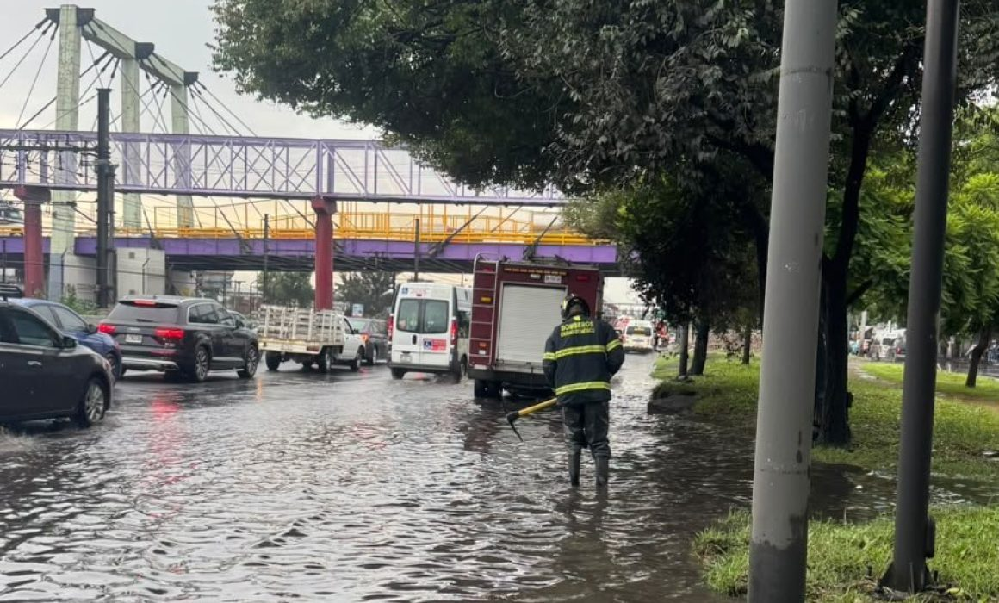

Imagen: Gobierno de la Ciudad de México
Cada temporada de lluvias volvemos a hablar de drenaje, tráfico e infraestructura. No obstante, quizá estamos teniendo las conversaciones equivocadas. Las inundaciones no son solamente un problema hidráulico; también son un problema de paz. Entenderlas desde esa perspectiva nos obliga a mirar cómo se distribuyen sus consecuencias dentro de la ciudad.
En 2026, de acuerdo con la Gaceta UNAM, la institución identificó 38 colonias de la Zona Metropolitana de la Ciudad de México con alto riesgo de inundación debido a la combinación de hundimientos del suelo y el deterioro del drenaje. Aunque en 2025 el Gobierno de la Ciudad de México destinó 570 millones de pesos a renovar parte de su infraestructura hidráulica, la investigadora Adriana Hernández Cantarell (2025) advierte que las inundaciones responden a procesos históricos de urbanización y desigualdad territorial que siguen concentrando el riesgo en las mismas zonas.
El sociólogo Johan Galtung argumentaba que la violencia no siempre se manifiesta de forma directa; también existe cuando las estructuras sociales exponen sistemáticamente a ciertos grupos a condiciones que limitan sus oportunidades. Desde esta perspectiva, cuando las mismas comunidades enfrentan, año tras año, pérdidas que podrían prevenirse mediante mejores condiciones urbanas e institucionales, esa realidad puede entenderse como una expresión de violencia estructural.
Esta idea conecta con el concepto de paz urbana promovido por ONU-Hábitat, que entiende la paz no como la ausencia de violencia, sino como la construcción de ciudades más seguras, resilientes y equitativas. Bajo este enfoque, la capacidad de una ciudad no se mide solo por la rapidez con la que drena el agua después de una tormenta, sino por su capacidad para evitar que los costos recaigan siempre en las mismas comunidades.
Una agenda de paz urbana exige ir más allá de la inversión en infraestructura hidráulica. También implica incorporar a las comunidades más expuestas en la planeación de las obras, evaluar las políticas de gestión del agua por su capacidad para reducir desigualdades y priorizar los territorios donde el riesgo se ha vuelto recurrente. No basta con responder mejor a las inundaciones; hay que evitar que siempre afecten a las mismas personas.
La próxima vez que una tormenta paralice la ciudad, quizá valga la pena mirar más allá del nivel del agua. Cada calle inundada habla de cómo distribuimos el riesgo, la protección y las oportunidades dentro de la ciudad. Pensar las lluvias desde la paz urbana no hará que deje de llover, pero sí puede ayudarnos a construir una ciudad donde una tormenta no determine quién puede continuar con su vida y quién deberá empezar de nuevo.
CIPMEX · Centro de Investigación para la Paz México, A.C. · Paz que se piensa, paz que se construye